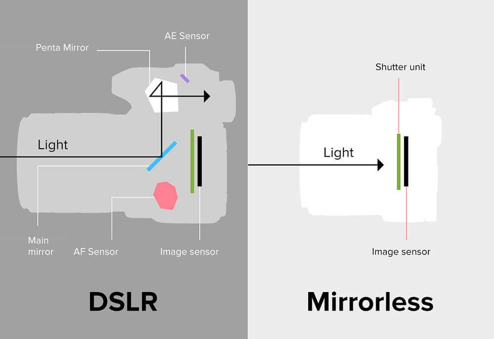
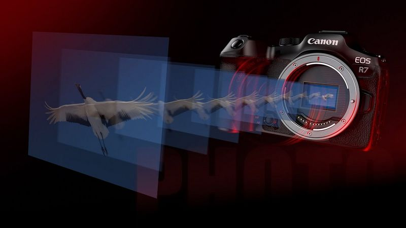
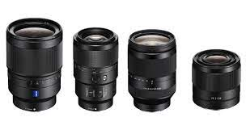
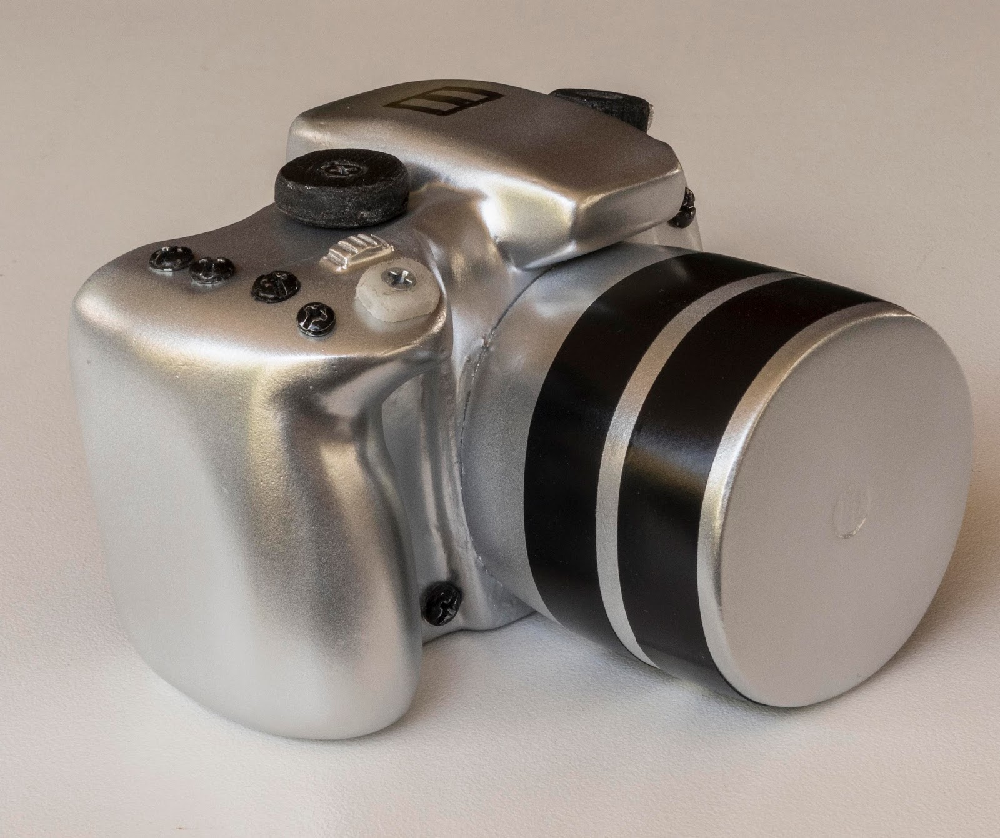
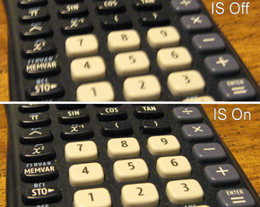
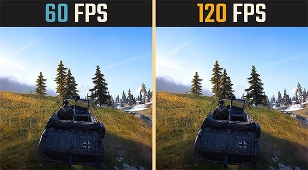

Tips And Tricks
⇤
Photography Tips
Tips to buy a camera
DSLR vs Mirrorless

Speed and Performance

Interchangeable Lenses

Ergonomics

Image Stabilization

Frames Per Second (fps)

Click to know more about tips and tricks to buy a camera